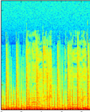

Our audio fingerprinting tool uses a combination of signal processing and image processing techniques (described in this paper by Zafar Rafii, Bob Coover and Jinyu Han) to determine a similarity value between two audio samples. The original paper proposed a method of audio fingerprinting that did not require the sample in question to be derived from the exact same recording as a sample in a queried database. First, we derive a log magnitude spectrogram of the sample and apply an adaptive binary threshold each bin. The sample is then compared to a database of audio samples using a Hamming Similarity measure. Ideal alignment of the sample and a sample from the database is determined using the Hough Transform, an image processing technique that finds paths that pass through a maximum number of points in a given image.
The tool will return a similarity value between the audio sample in question and the most similar sample in the database based on the adjusted Hamming similarity. Similarly, any two audio samples can be explicitly tested against each other. Ultimately, the results of this similarity measure will be compared roughly to human perception through conducted surveys regarding the perceived similarity of different audio samples according to participants..
For each bin in the log spectrogram, a binary value is computed based on the median magnitude of the surrounding bins. If the bin is less than the median, it is set to 0 in the output, otherwise it is set to 1. The results will be tested with a variety of neighborhood sizes. Below is an example log spectrogram and the resulting binary image from our adaptive thresholding algorithm:
Hamming Similarity is a method of measuring similarity between binary arrays. The two arrays are subtracted from each other, and the resulting array is summed using the absolute value of each element. The resulting value is a measure of the similarity of the two binary arrays.
The Hough Transform is an image processing technique used to find lines common to the largest possible sets of points. Here, it is applied to the binary image to determine the proper alignment between the querry and reference samples. Within a limited range of angles, the value that yields the maximum Hamming similarity is returned.
Donec ullamcorper nulla non metus auctor fringilla. Vestibulum id ligula porta felis euismod semper. Praesent commodo cursus magna, vel scelerisque nisl consectetur. Fusce dapibus, tellus ac cursus commodo.
Donec ullamcorper nulla non metus auctor fringilla. Vestibulum id ligula porta felis euismod semper. Praesent commodo cursus magna, vel scelerisque nisl consectetur. Fusce dapibus, tellus ac cursus commodo.